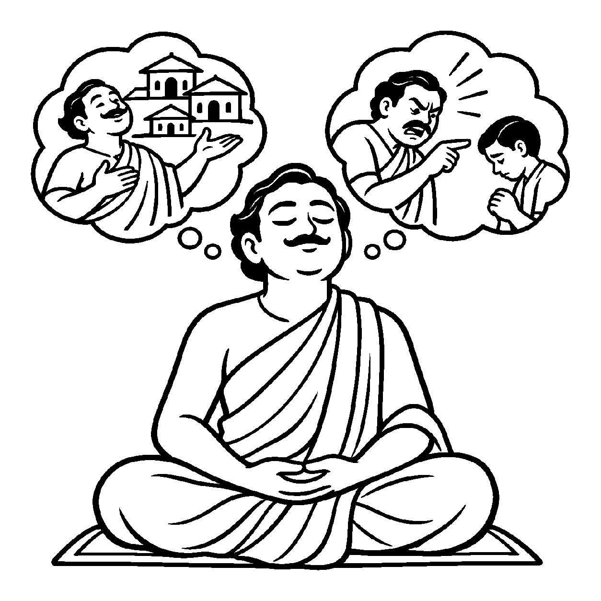

એક સંગીતજ્ઞ જ્યારે સિતાર ખોળામાં લઈને મંત્રમુગ્ધ થઈને તાર છેડે છે અને સુરાવલીઓ વહેવડાવે છે, ત્યારે જ શ્રોતાઓ પોકારી ઊઠે છે: "અહો! કેવો અદ્ભુત વાદક છે!" પરંતુ જ્યારે તે સિતાર બાજુ પર મૂકીને ચાલી જાય છે, ત્યારે તે કેવળ એક સામાન્ય વટેમાર્ગુ બની જાય છે. તેવી જ રીતે દીવાની વાટ જ્યારે તેલ ખેંચીને અગ્નિરૂપે પ્રજ્વળે છે, ત્યારે જ તેને 'દીપક' કહેવાય છે; બુઝાઈ ગયેલી વાટને કોઈ પ્રકાશ આપનાર કહેતું નથી. ભૂતકાળમાં શું હતું કે ભવિષ્યમાં શું થશે તેની કલ્પના કર્યા વિના, પદાર્થ જે ક્ષણે જે ગુણ કે ક્રિયાથી પરિણમી રહ્યો હોય, તે વર્તમાન ભાવમાં જ વસ્તુનો સાક્ષાત્કાર કરતો દ્રષ્ટિકોણ એટલે 'ભાવનય'.
આત્મા ત્રિકાળી છે એ સત્ય છે, પરંતુ મુક્તિ કે બંધન તો વર્તમાન પરિણામો પર નિર્ભર છે. જો વર્તમાનમાં ક્રોધ છે તો જીવ ક્રોધી છે, અને જો વર્તમાનમાં ક્ષમા અને જ્ઞાનની જ્યોતિ જાગ્રત છે તો જીવ પરમ શુદ્ધ છે. ભાવનય અતીતના ભાર અને ભવિષ્યની ચિંતાથી મુક્ત થઈને સાધકને પ્રત્યેક ક્ષણે જાગ્રત રહેવાની પ્રેરણા આપે છે.
આ નય સાધકને અહીં અને અત્યારે જ આત્મસ્વરૂપમાં સ્થિર કરી પરમ શાંતિનો અનુભવ કરાવે છે.
વર્તમાન પરિણામ જે, ભાવનયે ઓળખાય;
ક્ષણે ક્ષણની જાગૃતિ, મુક્તિ માર્ગ સુહાય.
દીપક બળે તો તેજ છે, સુરાવટમાં ગાન;
અંતર ભાવે જે રમે, પામે પદ નિર્વાણ.
સાધકને અહીં અને અત્યારે જ આત્મસ્વરૂપમાં સ્થિર કરી પરમ શાંતિનો અનુભવ કરાવે છે.

ધર્મક્ષેત્રમાં વસતા એક ધનાઢ્ય શ્રેષ્ઠી સુશીલકુમાર પોતાના ભૂતકાળના દાન અને તપના ગુણગાન ગાવામાં મસ્ત રહેતા હતા. તેઓ વારંવાર કહેતા: "મેં ભૂતકાળમાં આટલા આશ્રમો બનાવ્યા છે, હું તો મોટો પુણ્યશાળી જીવ છું!" પરંતુ પોતાના ઘરમાં કોઈ નાની ભૂલ કરે તો તેઓ ક્રોધથી લાલચોળ થઈ જતા અને અપશબ્દો બોલતા. એક દિવસ તેમના મનમાં અશાંતિ વ્યાપી ગઈ: "હું આટલો મોટો દાનવીર છું છતાં મારું મન આટલું અશાંત કેમ રહે છે? મારી અંદર શાંતિનો એક પણ ઝરણું કેમ ફૂટતું નથી?" તેમની અંદર વર્તમાન જીવનના કલેશમાંથી છૂટવાની તીવ્ર પિપાસા જાગી.
તે સમયે નગરમાં એક શાંત, પ્રશાંત મુનિરાજનું આગમન થયું. સુશીલકુમારે તેમના ચરણોમાં નમીને પોતાની વ્યથા જણાવી. મુનિરાજે સ્મિત સાથે કહ્યું: "શ્રેષ્ઠી! ગઈકાલે ખાધેલા પકવાનથી આજની ભૂખ ભાંગતી નથી, અને ગઈકાલે સળગાવેલા દીવાથી આજનો અંધકાર મટતો નથી! ભાવનયની દ્રષ્ટિએ વિચાર કર. ગઈકાલે તું દાતા હતો, પણ આ ક્ષણે તું ક્રોધી છે! આત્મા વર્તમાન ભાવથી ઓળખાય છે. તારા ગઈકાલના પુણ્યના ગુણગાન છોડ અને અત્યારે, આ જ ક્ષણે તારા ચિત્તમાં ક્ષમા, શાંતિ અને સમતાનો ભાવ પ્રગટાવ! શુદ્ધ ભાવ પ્રગટે તે ક્ષણથી તું મુક્તિમાર્ગે આગળ વધે છે; પરમાત્મા અથવા સિદ્ધ અવસ્થા ત્યારે જ કહેવાય જ્યારે બધા કર્મોનો ક્ષય થાય." આ વેધક સત્ય સુશીલકુમારના હૃદયમાં સોંસરવું ઊતરી ગયું. તેમણે અતીતનો ગર્વ છોડી દીધો અને વર્તમાન પળમાં પોતાના મનને સમતામાં સ્થિર કર્યું. ક્ષણવારમાં અંતરની તમામ દાહ શમી ગઈ અને તેઓ મહામૌનમાં અંતર્લીન થઈ ગયા.
જો જીવ કેવળ વર્તમાન ભાવને જ સર્વસ્વ માની ત્રિકાળી ધ્રુવ આત્મદ્રવ્યને ભૂલી જાય, તો તે ક્ષણિક પર્યાયોના પ્રવાહમાં તણાઈને આત્મવિશ્વાસ ગુમાવી બેસે છે. શબ્દો કે વ્યાકરણના બાહ્ય નિયમોમાં જ અટવાઈ રહેવાથી અંતરંગ ભાવશુદ્ધિ ખોવાઈ જાય છે અને જીવ શુષ્ક વાદવિવાદ કે જડ ક્રિયાજડતામાં સબડતો રહે છે.
આ નય વર્તમાન ક્ષણની શુદ્ધતા પર ભાર મૂકી સાધકને સદા જાગ્રત રાખે છે, જેથી ચેતના સહજ શાંતિમાં ડૂબી જાય છે. તે વાણી અને સંજ્ઞાઓને આત્મજ્ઞાનનું સાધન બનાવી સાધકને નિર્વિકલ્પ અનુભૂતિ તરફ દોરી જાય છે, જેથી ચેતના પોતાના આત્મસ્વરૂપમાં સ્થિર થઈ શાંતિ અનુભવે છે.